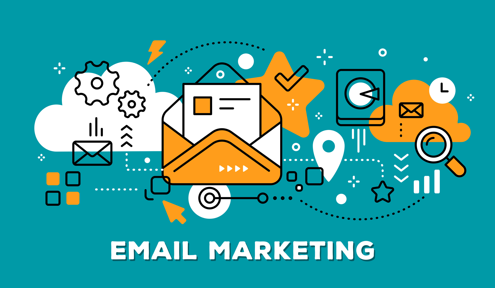
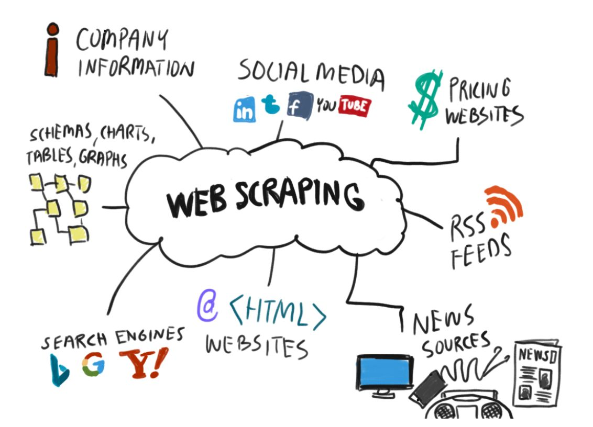

When a hosting provider allocates space on a web server for a website to store its files, they are hosting a website. Web hosting makes the files that comprise a website (code, images, etc.) available for viewing online. Every website you've ever visited is hosted on a server.
...
If you get your perfect web hosting type then check this all
If you chose one web server then check what sort of features your web host has to offer, things like how many domains can be hosted on one account and how much storage and bandwidth is available
providers generally charge based on storage and bandwidth usage. Bandwidth is a measure of how many bytes you serve over a given period. If you expect only a few folks to visit your site, the bandwidth will below. But if you're suddenly featured at the top of Google or your product goes viral you can expect bandwidth requirements to surge.

SSL certificate will encrypt your website and customer data, and make sure no outside hacker can steal it. This is especially useful if you operate a website, where customers are required to enter sensitive data, such as email, credit card numbers, and their home address.
Our client's data is very important for our business. In the case of database and hard disk failures or hackers, some web hosts do regular backups of data so they should be able to restore your website in full.
Look for a hosting provider that offers you a user-friendly web-based control panel that will allow you to easily manage many aspects of your website from any location yourself.
These are the important tips for finding the best web hosting
Email marketing is the act of sending a commercial message, typically to a group of people, using email. In its broadest sense, every email sent to a potential or current customer could be considered email marketing.
...Email marketing is a form of direct marketing that uses electronic mail as a means of communicating commercial or fundraising messages to an audience. In its broadest sense, every email sent to a potential or current customer could be considered email marketing.
Transactional emails are usually triggered based on a customer's action with a company. To be qualified as transactional or relationship messages, these communications primary purpose must be "to facilitate, complete, or confirm a commercial transaction that the recipient has previously agreed to enter into with the sender" along with a few other narrow definitions of transactional messaging
Direct email involves sending an email solely to communicate a promotional message (for example, a special offer or a product catalog). Companies usually collect a list of customer or prospect email addresses to send direct promotional messages to, or they rent a list of email addresses from service companies.
The email has become such a popular marketing tool for businesses partly because it forces the user to take some kind of action; an email will sit in the inbox until it’s read, deleted, or archived. But email is also one of the most cost-effective tools available, too
The two biggest advantages of email marketing are price and ease. Compared to other types of marketing, emailing is an inexpensive way to advertise your company and its products or services.
Email marketing tools are tools marketers use to create, send, test, optimize, and report on their email campaigns. Campaign Monitor enables businesses to craft beautiful emails, create automated journeys, and deliver personalized messages that improve your relationship with customers.
Web scraping is the process of using bots to extract content and data from a website. Unlike screen scraping, which only copies pixels displayed onscreen, web scraping extracts underlying HTML code and, with it, data stored in a database. The scraper can then replicate entire website content elsewhere.
...
Our first advice is quite a common one: respect the site you're scraping. Read the robots.txt file written by the website's owner to know what pages you can or cannot scrape. In some cases, it will also include information about at what frequency you're allowed to scrape the site.
Also, you should respect the other users visiting the site. Intensive scraping of a website can use a big part of its bandwidth. This will result in other users having a poor experience of the website.
This is web scraping curtesy. If you don't respect those rules, you might end up having your IP address blocked. We will detail this later in the article.
One of the first goals of web scraping is to collect data faster than if done manually. However, we strongly advise you to scrape slowly. The browsing speed is a great indicator for a website to identify if a user is a person or a scraping bot. If not specified otherwise, a bot will always take the fastest route, making it easy to unmask. This is why we recommend you to add some random delays when you crawl and scrape a website for your bot to be human-like. You can also add random house movements and clicks.
Most websites don't appreciate being scraped. Some of them have developed anti scraping methods and will block you. Generally, you will know straight away that you have been blocked, as you will get a 403 error code. However, there is more malicious ways to block you without knowing it. Some websites will still send you some data, but it will be voluntarily fake. By recording logs, you can keep track of how the website responded, and get alerted when anything is unusual: for example, a really short response time.
When a regular user visits a website, the website will read this person's user agent. It is composed of different details on how this person is visiting their site: what browser, which version, what device he's visiting the page from, etc. Visitors without user agent are automatically labeled as bots. This is why a good trick is to write few different user agents, and regularly rotate between them. You should also be careful of not using old or obsolete browser versions, as this might become suspicious. Update your user agents pool from time to time.
Many websites have content rendered by Javascript, and therefore unavailable to scrape directly from the raw HTML. The only way to do it is by using a headless browser. The headless browser will process the Javascript and render all the content. We call it headless because there is no graphical user interface. This is an advanced way to simulate a human user, as the scraper visits and parse the page as if it were using a regular browser.

The first thing anti scraping systems will do is to look at your IP address. If you are detected, you'll end up on their IP blacklist and won't be able to visit nor scrape that site again. By using a proxy, your request will appear as if it was coming from a different IP address than yours. Standard proxy provide data center IP addresses. Those are easier to detect and block. By using premium proxies like Zyte, Netnut or SquidProxies, you will get residential proxies, allowing you to bypass any geographical restrictions, and scrape more complicated websites such as Google and Amazon.
Web crawlers are a great tool to associate with a web scraping API. The crawler will feed to the scraping API the URLs to collect data from. It will update the list of URLs to crawl and scrape as it goes. You can also set some rules to sort which URLs to scrape or not. You can read our article about how to build a web crawler to learn more.
That's it for our main web scraping tips. Most of these are handled by ScrapingBot, so you have nothing to worry about.


Copyright © 2020 mugesh. All Rights reserved.